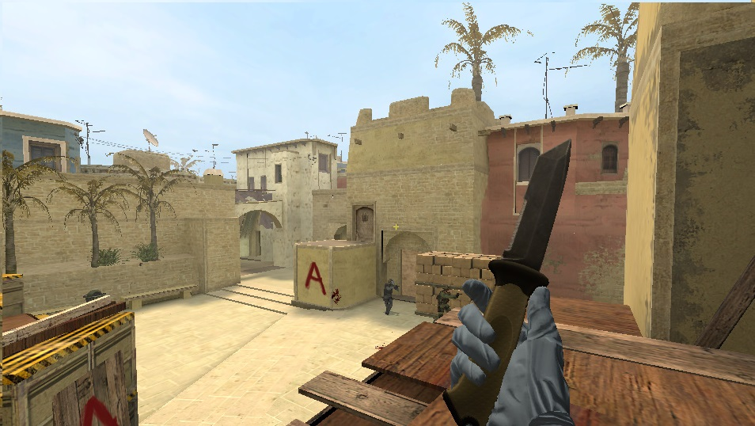
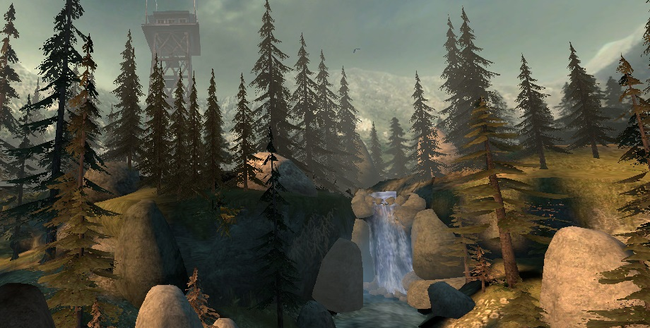

Скачать скины для КС Соурс v34
Содержание
Что такое Counter-Strike Sourse v34?
Counter Strike: Sourse v34 - это мультиплеерный шутер, повествующий о бесконечном противостоянии двух сторон
- Террористов и Спецназа. Главной особенностью игры является то, что добиться успехов в ней может каждый, ведь
достаточно уметь прицеливаться и бегать, чтобы уже можно было убивать противников. Так же стоит отметить, что
в CS: Sourse v34 на победу влияет не только умение стрелять каждого из бойцов, но еще и тактика, из-за чего
она завоевала популярность по всему миру, так как в ней удовольствие получат и новички, и опытные игроки
Пак скинов на всё оружие с проработанными руками
Это полный пак скинов с оружием который позволит вам играть в кс соурс с новыми ощущениями,
Перчатки из Pay Day 2 для CS Sourse
Перчаточки идеально подходящие для предыдущего пака отлично сочетающие в игре настощего киллера и обычного бойца
скачать эксклюзивные перчаточки можно ниже
Карта forest для CSS v34
Замечательная проработанная карта Forest для игры CSS v34. эта карта идеально подходит
для тактической игры. Карту можно скачать ниже